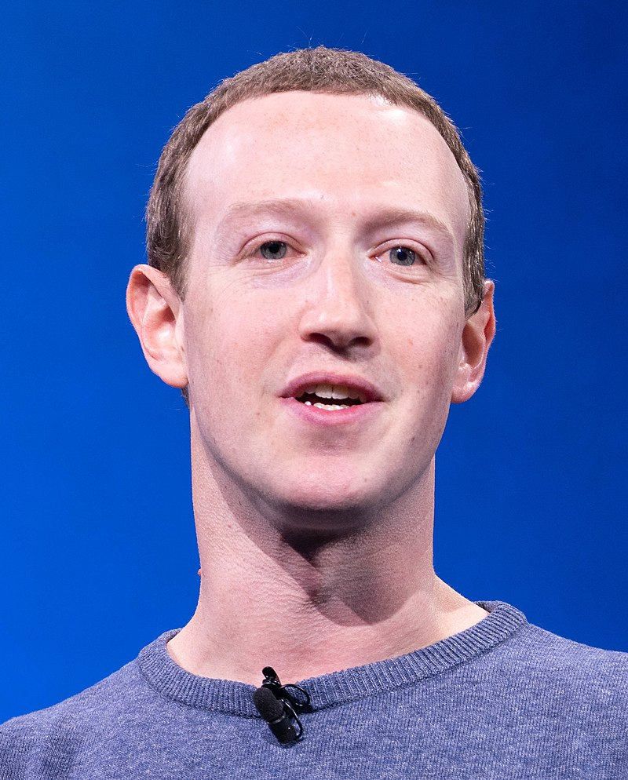

In a Harvard dorm, Mark Zuckerberg, a brilliant student, crafted a groundbreaking idea. With code and determination, he birthed Facebook, a social network connecting friends. Its rise to prominence changed the digital landscape forever, revolutionizing how people connect and communicate worldwide.

Mark Zuckerberg
Founder and CEO of Meta aka Facebbok

In a strategic move, Mark Zuckerberg recognized Instagram's potential and its growing user base. In 2012, Facebook acquired Instagram, welcoming it into its family of social media platforms. This acquisition bolstered Facebook's presence in the mobile space and expanded its offerings, cementing its dominance in the social media realm.

In 2014, Mark Zuckerberg saw WhatsApp's immense popularity and potential as a global messaging platform. Recognizing its value, Facebook acquired WhatsApp, bringing it under its umbrella. This move bolstered Facebook's messaging capabilities and expanded its user base exponentially. WhatsApp continued to thrive independently, while also integrating with Facebook's ecosystem, making it a powerful and widespread communication tool across the world.